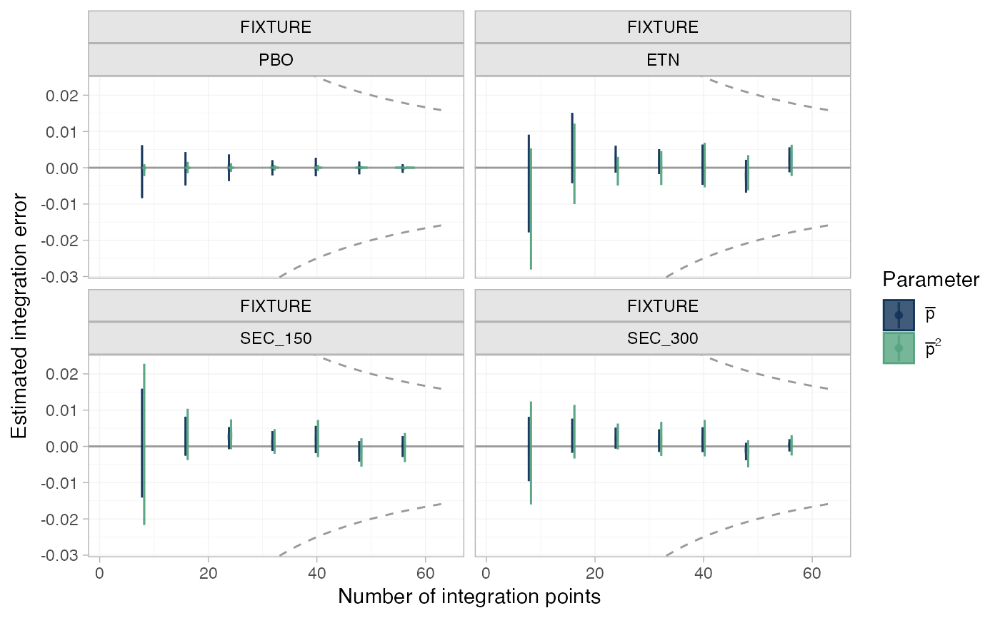

For ML-NMR models, plot the estimated numerical integration error over the entire posterior distribution, as the number of integration points increases. See (Phillippo et al. 2020; Phillippo 2019) for details.
plot_integration_error( x, ..., stat = "violin", orientation = c("vertical", "horizontal", "x", "y"), show_expected_rate = TRUE )
| x | An object of type |
|---|---|
| ... | Additional arguments passed to the |
| stat | Character string specifying the |
| orientation | Whether the |
| show_expected_rate | Logical, show typical convergence rate \(1/N\)?
Default |
A ggplot object.
The total number of integration points is set by the n_int
argument to add_integration(), and the intervals at which integration
error is estimated are set by the int_thin argument to nma(). The
typical convergence rate of Quasi-Monte Carlo integration (as used here) is
\(1/N\), which by default is displayed on the plot output.
The integration error at each thinning interval \(N_\mathrm{thin}\) is
estimated for each point in the posterior distribution by subtracting the
final estimate (using all n_int points) from the estimate using only the
first \(N_\mathrm{thin}\) points.
## Plaque psoriasis ML-NMR # \donttest{ # Run plaque psoriasis ML-NMR example if not already available if (!exists("pso_fit")) example("example_pso_mlnmr", run.donttest = TRUE) # } # \donttest{ # Plot numerical integration error plot_integration_error(pso_fit)# }